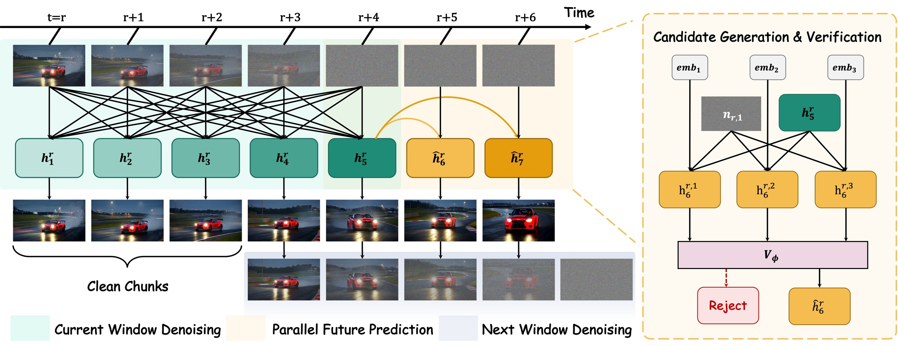

Learning to Look Ahead for Autoregressive Long Video Diffusion
Two 5-minute videos, each generated autoregressively from a single text prompt.
“A stylish woman walks down a Tokyo street filled with warm glowing neon and animated city signage.”
“A man's face lit up with happiness as he received a heartfelt compliment.”
30-second videos generated by Prospective Forcing.
“A paper origami dragon riding a boat in waves. Realistic style.”
“A skeleton wearing a flower hat and sunglasses dances in the wild at sunset.”
“A rally car taking a fast turn on a track.”
“A gorgeously rendered papercraft world of a coral reef, rife with colorful fish and sea creatures.”
“An adorable kangaroo wearing purple overalls and cowboy boots taking a pleasant stroll in Mumbai India during a colorful festival.”
“A bear wearing a superhero cape, flying through the sky over a bustling city.”
Autoregressive video generators synthesize long videos through chunk-wise rollouts, yet they are typically trained to predict only the immediate future. This limited prediction horizon makes it challenging to maintain video quality over extended rollouts. To address this problem, we introduce Prospective Forcing, a multi-head prediction framework that injects long-range predictive signals into autoregressive video representations. Built on a rolling-window generator, Prospective Forcing attaches lightweight, offset-specific heads that share the same conditioning information and independently predict chunks at different future temporal offsets. By extending supervision beyond the next chunk, these heads encourage the shared history representation to retain information useful for longer-horizon prediction, supporting temporally consistent generation. At inference time, we accelerate sampling by using accepted future-chunk predictions to skip full-window backbone executions. We equip the head with learnable embeddings to generate multiple candidates for the next chunk, and a learned verifier either selects a candidate or rejects all and falls back to standard autoregressive generation.

@article{shen2026prospective,
title = {Prospective Forcing: Learning to Look Ahead for Autoregressive Long Video Diffusion},
author = {Shen, Yifan and Xia, Yewei and Luo, Gongxu and Zhu, Peiyuan and Sun, Boyang and
Chen, Zhenhao and Liu, Guangyi and Chen, Guangyi and Zhang, Kun},
journal = {arXiv preprint},
year = {2026}
}